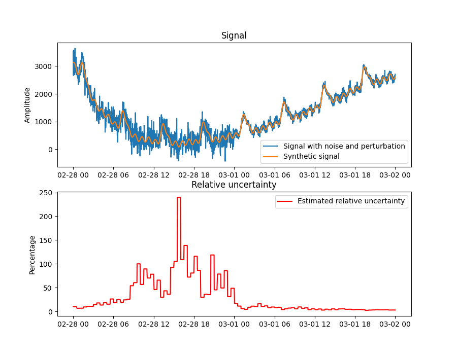

Note
Click here to download the full example code
Relative uncertainty estimation
This example shows how to estimate the relative uncertainty of a non-linear, non-stationary signal using detrending. We generate a synthetic signal composed of:
Three oscillatory signals of different but significant amplitudes
Two polynomial functions or trends
Data drift
To make the case more realistic, from an industrial perspective, the timestamps are modified to make them nonuniform and 35% of the data points are randomly removed. Finally, Gaussian noise with a signal-to-noise ratio of 10db and 20db is are added to the left and right half of the data, respectively.
The figure shows the synthetic signal with and without noise (top), and the estimated relative uncertainty (bottom). On the left half of the data, where the noise is large, the estimated relative uncertainty increases when the signal reaches close to 100%. On the right side half of the data, where the noise is small, the relative uncertainty remains closer to 0%.
import matplotlib.pyplot as plt
import numpy as np
import pandas as pd
from indsl.data_quality import uncertainty_rstd
from indsl.signals import insert_data_gaps, line, perturb_timestamp, sine_wave, white_noise
seed = 21
start_date = pd.Timestamp("2022-02-28")
end_date = pd.Timestamp("2022-03-02")
# Wave 1: Small amplitude, long wave period
wave01 = sine_wave(
start_date=start_date,
end_date=end_date,
sample_freq=pd.Timedelta("1m"),
wave_period=pd.Timedelta("6h"),
wave_mean=0,
wave_amplitude=6.5,
wave_phase=0,
)
wave01 = np.exp(wave01)
# Wave 2: Large amplitude, short wave period
wave02 = sine_wave(
start_date=start_date,
end_date=end_date,
sample_freq=pd.Timedelta("1m"),
wave_period=pd.Timedelta("1h"),
wave_mean=0,
wave_amplitude=100,
wave_phase=0,
)
# Wave 3: Large amplitude, short wave period
wave03 = sine_wave(
start_date=start_date,
end_date=end_date,
sample_freq=pd.Timedelta("1m"),
wave_period=pd.Timedelta("3h"),
wave_mean=5,
wave_amplitude=35,
wave_phase=np.pi,
)
# Trends
trend_01 = (
line(start_date=start_date, end_date=end_date, sample_freq=pd.Timedelta("1m"), slope=0.00008, intercept=1) ** 3
)
trend_02 = (
line(start_date=start_date, end_date=end_date, sample_freq=pd.Timedelta("1m"), slope=-0.00005, intercept=5) ** 5
)
drift = line(start_date=start_date, end_date=end_date, sample_freq=pd.Timedelta("1m"), slope=0.00005, intercept=0)
signal = wave01 + wave02 + wave03 + trend_01 + trend_02 - drift
N = len(signal)
signal_w_noise_high_db = perturb_timestamp(white_noise(signal, snr_db=20, seed=seed))
signal_w_noise_low_db = perturb_timestamp(white_noise(signal, snr_db=10, seed=seed))
signal_w_noise = pd.concat([signal_w_noise_low_db[: N // 2], signal_w_noise_high_db[N // 2 :]])
signal_to_analyse = insert_data_gaps(signal_w_noise, method="Random", fraction=0.35)
uncertainty = uncertainty_rstd(signal_to_analyse)
fig, ax = plt.subplots(2, 1, figsize=[9, 7])
ax[0].plot(signal_to_analyse, label="Signal with noise and perturbation")
ax[0].plot(signal, label="Synthetic signal")
ax[0].set_title("Signal")
ax[0].set_ylabel("Amplitude")
ax[0].legend()
ax[1].plot(100 * uncertainty, label="Estimated relative uncertainty", color="r")
ax[1].set_title("Relative uncertainty")
ax[1].set_ylabel("Percentage")
ax[1].legend()
plt.show()
Total running time of the script: ( 0 minutes 3.386 seconds)